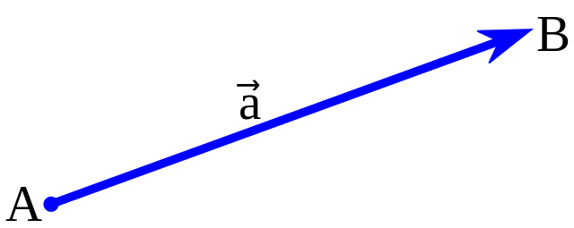
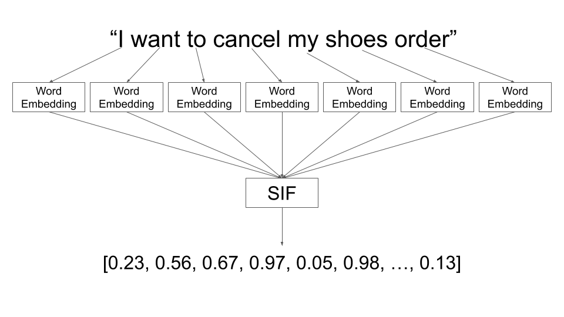

A Gentle Introduction to
By Kostas Minaidis
Read More
▾
Before the advent and proliferation of Machine Learning in the early 2000's, the task of processing and understanding natural language using computers was mainly based on Statistical models and Rule-based systems, something closely related to traditional programming.
if this word then that
Basic rules were handcrafted according to the grammar and syntactic rules along with dictionary-based word translations.
This approach revealed early on various limitations such as making sense of and dealing with ambiguations, unseen text content, neologisms, slang and Internet parlance.
It also proved to be a labor-intensive and time-consuming process.
As Machine Learning and more specifically Artificial Neural Networks started showing their amazing capabilities and rapid progress in the early 2000's, computer scientists working in the fields of NLP and NLU started switching their focus to ML-based approaches for dealing with the growing challenges of these fields.
The Machine Learning revolution in the early 2000's was driven by the accumulation of larger and larger datasets, especially of natural language content: from Wikipedia entries to social media posts and from news websites to digital messages.
At the same time the power, speed and architectural advantages of ML algorithms based on Neural Networks were revealing their amazing pattern recognition skills.
Machine Learning was mature enough, highly efficient and provided substantial competitive advantages over traditional (rule-based) methods that dealt with NLP and NLU.
It was time for Artificial Intelligence to take the lead in areas such as these.
| A | cat | and | a | dog | play | together |
| 1 | 2 | 3 | 1 | 4 | 5 | 6 |
| a | cat | and | dog | play | together |
◂ Vocabulary |
|
| a | 1 | 0 | 0 | 0 | 0 | 0 | |
| cat | 0 | 1 | 0 | 0 | 0 | 0 | |
| and | 0 | 0 | 1 | 0 | 0 | 0 | |
| a | 1 | 0 | 0 | 0 | 0 | 0 | |
| dog | 0 | 0 | 0 | 1 | 0 | 0 | |
| play | 0 | 0 | 0 | 0 | 1 | 0 | |
| together | 0 | 0 | 0 | 0 | 0 | 1 |
Read more about their limitations
(size, semantics)
▾
In order for computers (these digital, number-crunching machines) to be able to handle words and text, they have to be converted into, well... digits. Numbers.
The process of encoding text (characters, words, sentences) into numbers is as old as computers themselves.
Various methods can be used to convert words into numbers.
The first two methods (Index-based and One-Hot Encoding) have some serious disadvantages and limitations.
One-Hot encoding creates huge vectors with size as large as the vocabulary itself. If the vocabulary consists of 100,000 unique words, then we have 100,000 vectors each in the size of 100,000 numbers.
That's pretty huge.
Most importantly, both methods lack one significant aspect: capturing the meaning of these words.
The semantics of these words are not reflected in these numbers.
Take for example the following one-hot encoded vectors of two (semantically) similar words:
Hotel
| 0 | 0 | 0 | 1 | 0 | 0 | 0 | 0 | 0 | 0 |
Motel
| 0 | 0 | 0 | 0 | 0 | 0 | 0 | 0 | 1 | 0 |
These vector representations do not reflect the semantic similarity of these two words and therefore cannot be used as a similarity metric.
Vectors: Quick Recap (1/2)
"A geometric object that has magnitude (or length) and direction."
"Many algebraic operations on real numbers such as addition, subtraction, multiplication, and negation have close analogues for vectors"
Vectors: Quick Recap (2/2)
A vector can be expressed as an array of numbers.
[ 0.5, 1.2, 3.0, 1.6, 4.1 ]
A vector of size 2x1 contains 2 numbers and can be thought of as a point in 2D space. In the same manner a vector of size 3x1 is a point in 3D space, a vector of 5x1 a point in 5D space and so on.
We can calculate how close of further apart two vectors are based on the distance measure between them.
(Image: Robert Meyer)
Read More
▾
Word Embeddings provide a new approach, revolutionizing the way words are turned into numbers.
Each word is not only encoded into a unique and light-weight vector, but this numerical representation gets to capture the word's semantics.
In simple words, these numbers encode (or one might say, reflect) the word's meaning.
"You shall know a word
by the company it keeps"
J.R.Firth
Word embeddings are created by Machine Learning algorithms that are trained on a large corpus of text.
During the training, the algorithm learns who to represent each word as a point and place it in the vector space according to the words that surround it.
Popular Word Embedding Implementations:
Following the success and popularity of Word Embeddings, similar algorithms were applied for both text sentences and documents which yielded equally successful results.
"The Universal Sentence Encoder (Cer et al., 2018) (USE) is a model that encodes text into 512-dimensional embeddings."
"These embeddings can then be used as inputs to natural language processing tasks such as sentiment classification and textual similarity analysis."
A lightweight version (lite) of a pre-trained USE model is available for use with TensorFlow.JS in any JavaScript environment (browser/server).
The model can be found in the official TensorFlow.js models page here or directly in the models repository.
Things to try. Add the following questions:
Use a Paraphrasing model to add more questions to the mix:
Google Colab
| Google Colab with FAQ
Read More
▾